鸟哥的私房菜
CH0 计算机概论
计算机组成单元
计算机组成：输入单元、处理单元（CPU内部控制单元+算术逻辑单元）、输出单元、存储单元（外部存储器+CPU内部的主存储器）。
数据都是流经CPU内部的主存储器在转出去的，至于数据会流进/流出内存则是CPU发出的控制命令实现，实际处理的数据完全来自主存储器CPU种类
精简指令集(Reduced Instruction Set Computing, RISC)
完成动作单一，执行时间短
常见的RISC 微指令集 CPU 例如Sun公司的 SPARC 系列、 IBM 公司的Power Architecture(包括 PowerPC)系列、不 ARM 系 列等
复杂指令集(Complex Instruction Set Computer, CISC)
每个指令集成了一些较低阶的硬件操作，指令数目多且杂，执行时间较长，处理的工作较为丰富。
Intel/AMD 的x86 架构CPU
指令集：软件都经过CPU内部转换成微指令来执行
接口设备
最重要的接口设备–主板（负责将所有设备通通连一起）
主板最重要的组件–主板芯片组（将所有设备汇集一起）
芯片组分两个网桥与各组件交互
- 北桥：负责速度快的组件，CPU、主存储器、显示适配器等组件
- 南桥：负责连接速度较慢的组件，硬盘、USB、网卡等
次要设备–存储设备、显示设备、网络设备（网卡）
容量单位
进制位 K M G T P 二进制 1024 1024K 1024M 1024G 1024T 十进制 1000 1000K 1000M 1000G 1000T 速度单位
CPU指令周期常用单位MHz或GHz，Hz其实是秒分之一。
CPU主频为3Ghz表示1秒能进行3x10^9次工作（一次工作运行少数的指令），若外频为333Mhz，则倍频为9倍。3G = 333M x 9
外频（通常超频是指拉高外频）
是指CPU与外部组件进行数据传输时的速度
倍频（通常被厂家锁定，无法修改）
是指CPU内部用来加速工作效能的一个倍数
主频 = 外频 x 倍频
网络使用单位为Mbps（Mbit per second）
8M ADSL –> 1Mbyte/s
1M ADSL –> 125Kbyte/s
带宽
北桥支持的频率称为前端总线速度（Front Side Bus，FSB）（通常为内存频率1066/1333/1600Mhz），每次传送数据的位数为总线宽度。常见的总线宽度为32bit/64bit。
举例：内存与北桥的带宽为12.8GBytes/s
即1600Mhz x 64bits = 1600Mhz x 8Bytes = 12800MBytes/s = 12.8GBytes/s
内存
主存储器（内存）主要组件为动态随机存取内存（dynamic random access memory，DRAM）
需在通电状态使用，断电数据丢失，也称为这种RAM为挥发行内存DRAM 技术更新分好几代（由旧到新）
SDRAM
DDR SDRAM（DDR、DDRⅡ、DDRⅢ、DDR4）
DDR 是指双倍数据传送（Double Data Rate，一个工作周期进行两次数据传送，类似CPU倍频）
双通道设计
拓展传统总线的宽度，将两个内存汇总在一起以达到128bit，就是双通道的设计理念。
DRAM与SRAM(Static Random Access Memory,SRAM)

L2 cache就是静态随机存储内存，SRAM在设计上使用晶体管数量较多，价格高不易做成大容量，但其速度快，因此整合到CPU成为高速缓存。
只读存储器ROM
BIOS（basic input output system）是系统开机首先会去读取的小程序，控制着开机时各项硬件参数，CMOS将记录这些参数到ROM中，这些参数包括系统时间、CPU电压与频率、各项设备的IO地址、IRQ中断信道等。
记录需要用电，所以主板上还有个小电池专门用来供电，断电数据不会丢失
闪存flash和EEPROM
现在BIOS也需要更新，而ROM又是无法修改的，所以现在BIOS通常写入闪存flash和EEPROM中。
固态硬盘SSD（solid state disk）
厂商用闪存做的，数据延迟低、省电、寿命较机械硬盘短。
显卡插槽
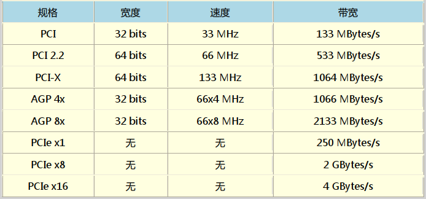
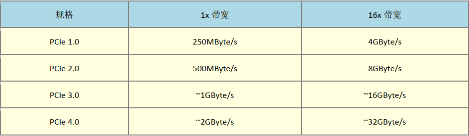
操作系统
简单理解为核心和相关的用户应用软件。只管理整个硬件资源（CPU、内存、输入输出装置及文件系统文件。）
如果没有用户软件的辅助，操作系统只能让计算机Ready而已
驱动程序
驱动硬件在操作系统上正常运行。驱动程序由厂商提供，与操作系统开发者无关。
应用程序
依托操作系统提供的开发接口所开发出来的软件。
CH1 Linux是什么
Linux的历史
Linus Torvalds开发Linux核心
POSIX（Portable Operating System Interface）可携式操作系统接口
树莓派/香蕉派/智能型手机/平板的ARM架构系统大多也使用Linux核心
Linux是架站首选（具备计算机基础和网络基础相关知识）
网络服务问题，到/var/log/目录中查询log file文件解决
设备在linux中以文件的形式存在，常用设备如下表
| 设备 | 路径 |
|---|---|
| SCSI/SATA/USB硬盘机 | /dev/sd[a-p] |
| USB闪存盘 | /dev/sd[a-p]（与SATA相同） |
| VirtI/O界面 | /dev/vd[a-p] |
| 25针打印机 | /dev/lp[0-2] |
| USB接口打印机 | /dev/lp[0-15] |
| 通用鼠标 | /dev/input/mouse[0-15] |
| PS/2界面鼠标 | /dev/mouse |
| 当前鼠标 | /dev/mouse |
| CDROM/DVDROM | /dev/scd[0-1] |
CH2 主机规划与磁盘分区
磁盘分区演进：MBR -> GPT
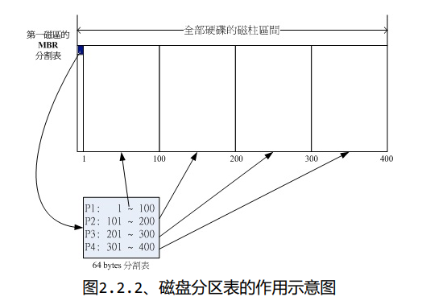所谓分区是针对64 Bytes进行分区设置，默认的分区表仅能写入四组分区信息，这四个分区的记录被称为主要（Primary）或延伸（Extended）分区。延伸分区最多只能有一个且不能被格式化（操作系统限制，当然可以没有延伸分区）。
分区的最小单位“通常”为柱面。
超过四个区是通过延伸分区的方式处理。分出的区域为逻辑分区。


GPT分区已经没有延伸分区与逻辑分区的概念，你可以想象所有分区都是主分区。

开机流程
BIOS -> MBR -> boot loader -> 核心文件 -> 操作系统
- BIOS：开机主动执行的固件，会认识第一个可开机的设备；
- MBR：第一个可开机设备的第一个扇区内的主要开机记录区块，内含开机管理程序。
- 开机管理程序（boot loader）：一支可读取核心文件来执行的软件；
- 提供菜单：使用者可以选择不同的开机项目，这也是多重开机的重要功能。
- 载入核心文件：直接指向可开机的程序区段来开始操作系统。
- 转交其他loader：将开机管理功能转交给其他loader负责。
- 核心文件：开始操作系统的功能…
UEFI与BIOS
文件系统与目录数的关系
挂载：利用一个目录当成进入点，将磁盘分区的数据放置在该目录下。
CH3 安装CentOS 7.x
swap：磁盘仿真成为内存，由于swap并不会使用目录树的挂载，所以用sawp就不需要指定挂载点。
xfs：CentOS默认的文件系统。
CH4 首次登陆与线上求助

基础指令操作


Ctrl+d 代表exit
Shift+Page Up 代表向前翻页
Shift+Page Down 代表向后翻页
man
是manual（操作说明的简写）
man date将输出以下信息，在此页面中输入 /abc ，可以对abc进行向下查找，输入？abc，可以对abc进行向上搜索，搜索后按n进行向下搜索，按N进行向上搜索。

括号中1的含义：(表中1，5，8三个号码特别重要，必须熟记)

超简单文本编辑器 – nano
nano text.txt#打开一text.txt文件

按Ctrl+G或F1 能调出详细说明

正确的关机指令使用
- 将数据同步写入硬盘中的指令 sync
- 惯用的关机指令 shutdown
- 重新开机，关机 reboot，halt，poweroff

CH5 Linux的文件权限与目录配置
Linux一般将文件的身份分为三个类别：owner/group/others
这三种身份均拥有三种权限：read/write/execute


root不受权限的限制，默认root都能访问，即使权限为---------
改变文件属性与权限
chgrp 改变文件所属群组
chgrp users file.txt 如果连同目录下的所有次目录或者文件同时更改文件拥有者的话，直接加上-R的选项即可chown 改变文件拥有者
chown [-R] 用户拥有者 文件或目录 chown [-R] 用户拥有者：群组名称 文件或目录 如果连同目录下的所有次目录或者文件同时更改文件拥有者的话，直接加上-R的选项即可
chmod 改变文件的权限，SUID,SGID,SBIT等等特性
各权限分数对照表
r：4
w：2
x：1
eg -rwx rwx —
owner = rwx = 4+2+1=7
group = rwx = 4+2+1=7
others = — = 0+0+0=0
chmod 644 .bashrc符号类型改变文件权限

#设置权限-rwxr-xr-x chmod u=rwx,go=rx .bashrc #注 中间没有空白 #设置权限-rwxr-xr-- chmod u=rwx,g=rx,o=r .bashrc #给每个人增加写入权限 chmod a+w .bashrc #去掉每个人的写入权限 chmod a-w .bashrc #注 去掉不存在的权限不会报错
权限对目录的重要性
上述权限只针对文件属性，而并不具备删除文件本身的权限
目录中rwx的重新定义
r （read contents in directory）
表示可以查看目录的文件名，用ls可以将其显示出来
w （modify contents of diectory）
你拥有以下权限
- 创建新的文件和目录
- 删除已经存在的文件和目录
- 将已存在的文件或目录更名
- 搬移该目录内的文件、目录位置
x （access directory）
与执行文件不同，目录x代表的是使用者能否进入该目录成为工作目录。而切换目录的命令为cd，所以没有x，你cd不进去这个目录。

说明：
我们看到root目录下，用户权限为rwx，却无法删除文件，就是因为它不是目录的拥有者。
所以，tnt用户删除不了该目录中任何一个文件
drwxr-xr-x 1 root root 512 Jan 26 22:06 bin #可以删除自身目录下的文件，因为该目录用户拥有w权限 tnt@TNT-PC:~$ pwd /home/tnt tnt@TNT-PC:~$ ls -l total 497788 -rwxr-xr-x 1 root root 5047 Jan 26 22:08 znew
表格解析：其实r是非必备的，相当摸黑你也能操作文件夹，如上图表格表格中最后一个权限。但没有r的话，你的TAB不能补齐哦。
所以，通常开放的目录会具备rx这两个权限。而w涉及删除操作，需谨慎对待。
常规文件 regular file
纯文本文件
可以用cat读出来
二进制文件
可执行文件，例如cat本身就是个二进制文件
数据格式文件
它属于特殊格式的文件，可以用last命令读出来

目录
链接文件
类似快捷方式
设备与设备文件
- 区块block设备文件 硬盘、软盘等
- 字符character设备文件 键盘、鼠标等
数据接口文件 sockets
可通过sockets进行通信
管道文件（FIFO， pipe）
具备可执行权限不一定具备可执行的程序码，只有两者均具备的文件才能被执行。Linux的文件没有所谓的“扩展名”。
Linux文件名称限制
最好避免以下一些特殊字符比较好：
*? > < ; & ! [ ] | \ ' " " ' ( ) { } . - + Linux目录配置的依据 – FHS
/ （ root, 根目录） ： 与开机系统有关；
/usr （ unix software resource） ： 与软件安装/执行有关；
/var （ variable） ： 与系统运行过程有关 。
FHS标准建议
根目录所在分区应该越小越好，且应用程序所安装的软件最好不要与根目录放在同一个分区内，保持根目录越小越好。如此不但性能较佳，也不容易发生问题。


CH6 Linux文件与目录管理
shell scripts建议使用绝对路径
. 代表此层目录
.. 代表上一层目录
- 代表上一次访问的目录
~ 代表“目前使用身份”所在的主文件夹
~account 代表account这个使用者所在的主文件夹cd
cd - 切换到上一次访问的工作目录
pwd 是Print Working Directory的缩写，显示当前目录（若是链接目录，显示的是链接目录而非实际目录）
pwd -P 与pwd区别在于，-P表示的是实际目录，而非链接目录
mkdir
-m 设置文件夹的权限
mkdir -m 711 test
-p 递归创建目录
mkdir -p test1/test2/test3/testecho $PATH 显示环境变量
PATH =”${PATH}:/root” 添加环境变量
不建议将“.”加入PATH的搜索目录中
文件与目录管理
ls
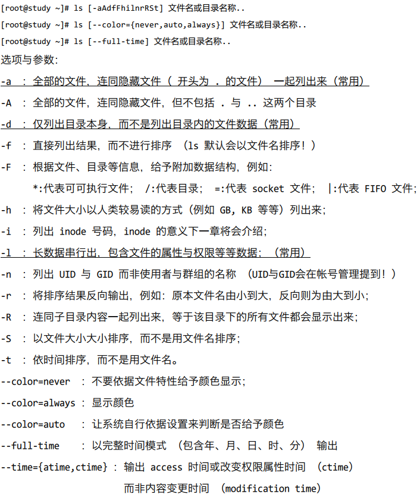
modification time （ mtime）： 文件内容变更会对该时间进行更新。 status time （ ctime） ： 权限或属性改变会更新此时间 access time （ atime） ： 文件被读取会更新此时间 eg date; ls -l /etc/man_db.conf ; ls -l --time=atime /etc/man_db.conf ; \ > ls -l --time=ctime /etc/man_db.conf
复制、移动、删除：cp，rm，mv
cp
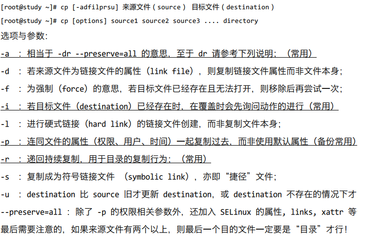
默认条件下，cp的来源文件与目标文件的权限是不同的，目标文件的拥有者通常会是指令操作者本身，需要和来源文件一致，可以使用-a或是-p选项
``可以将多个文件一次复制进同一目录，注意最后一个一定是目录`
cp ~/.bashrc ~/.bash_history /tmprm

#在指令前加反斜线，可以忽略alias的指定选项，即删掉目录而不提示 \rm -r /tmp/etc
mv

取得路径的文件名称与目录名称

文件内容查阅
cat 由第一行开始显示文件内容
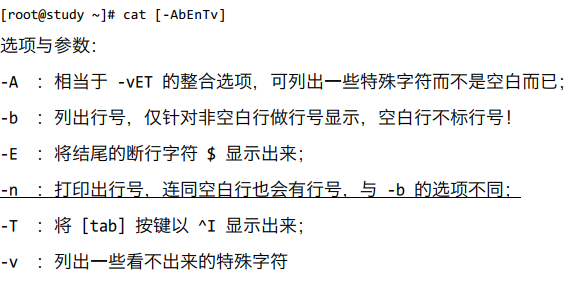
tac 从最后一行开始显示，与cat显示方式相反
nl 显示的时候，顺道输出行号
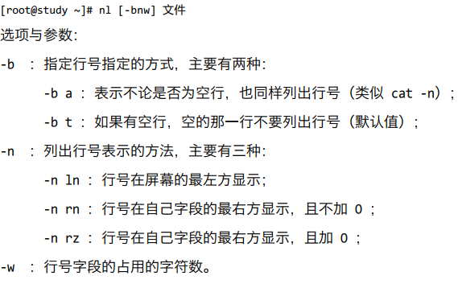
more 一页一页的显示文件内容

less与more类似，但是比more更好的是，它可以往前翻页

head 只看头几行
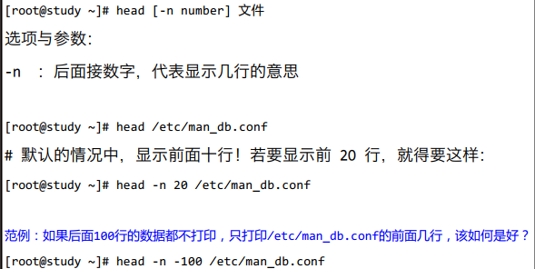
tail 只看尾巴几行
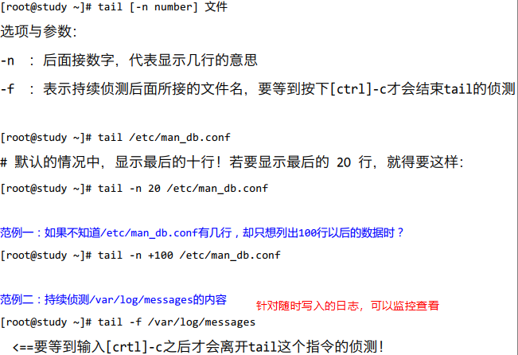
od 以二进制的方式读取文件内容 （？ 命令od -t oCc /etc/issue存疑）
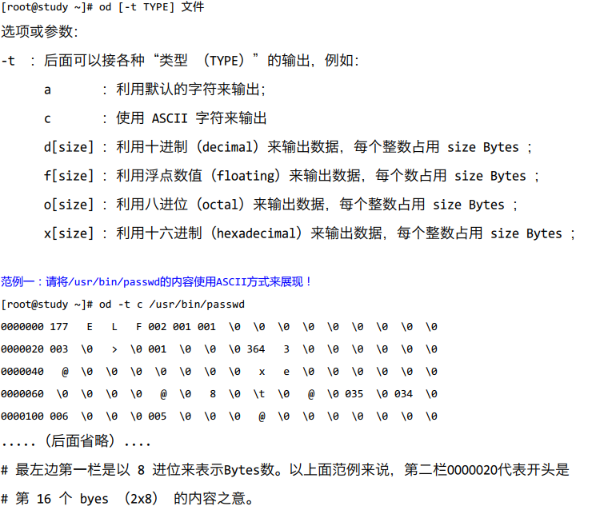
touch （选项中的时间可参照第6章ls）
默认不接参数，atime/ctime/mtime 为当前时间
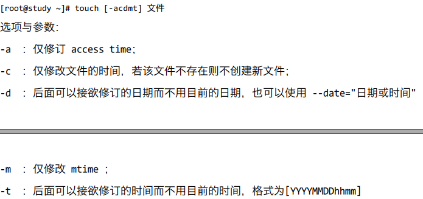
文件与目录的默认权限与隐藏权限
文件默认权限 umask
- umask -S查看
- 文件默认权限为666，默认没有可执行权限，即-rw-rw-rw
- 目录默认权限为777，即drwxrwxrwx
- 若设置umask为002即输入命令 umask 002，则创建文件的默认权限为666-002=664，这个在Samaba Server和FTP Server当中很有用。
- 出于安全考虑，root的umask会拿掉比较多的属性，通常umask为022
设置文件隐藏属性 chattr
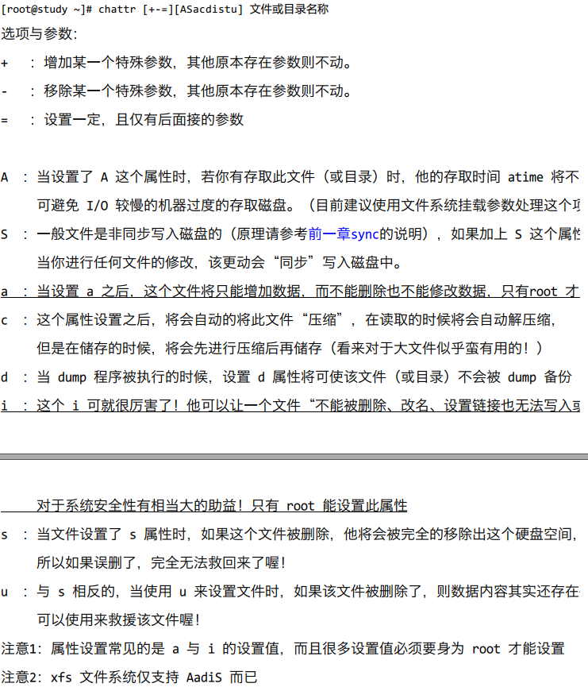
显示文件隐藏属性 lsattr
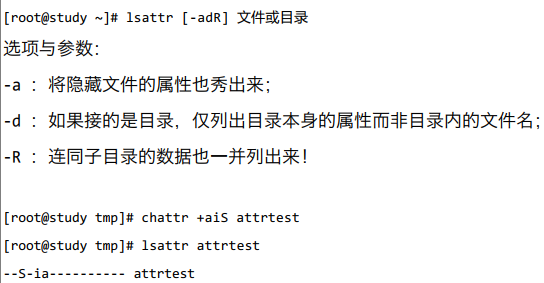
文件特殊权限：SUID,SGID,SBIT
SUID
举例：用户可以自行更改密码，而密码文件的所有权为root
1.dmtsai 对于 /usr/bin/passwd 这个程序来说是具有 x 权限的， 表示
dmtsai 能执行 passwd；
2.passwd 的拥有者是 root 这个帐号；
3.dmtsai 执行 passwd 的过程中， 会“暂时” 获得 root 的权限；
4./etc/shadow 就可以被 dmtsai 所执行的 passwd 所修改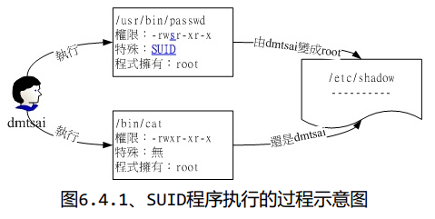
SGID
todo 待补充
SBIT
todo 待补充
file 文件名
可以简单获取文件信息
文件查找
which 寻找可执行文件
参数-a 可以列出所有PATH目录中的命令
find不常用 搜索硬盘的文件系统 速度慢todo 待补充
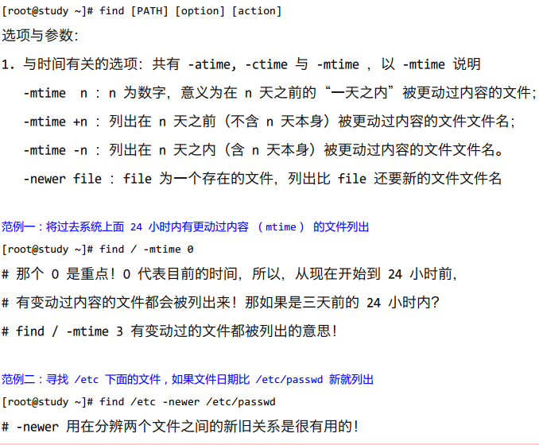
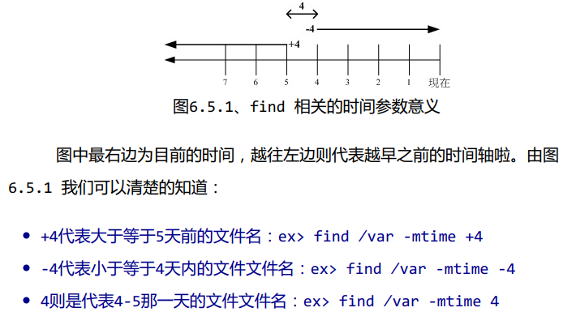
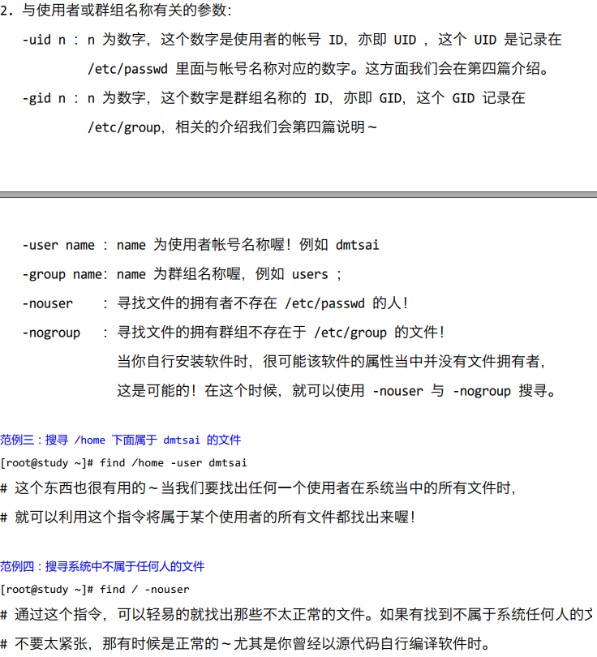
whereis 在某些特定的目录中寻找文件文件名
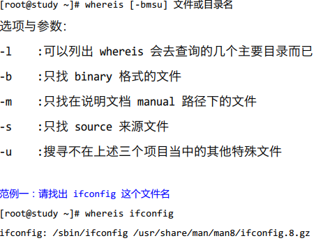
locate / updatedb 利用数据库搜索文件名
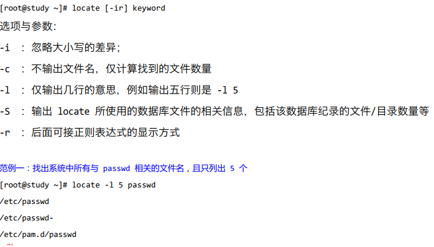
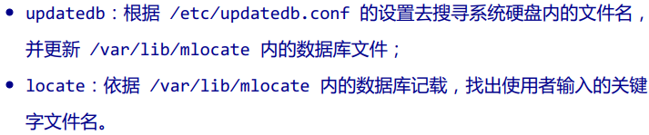
转载请注明来源，欢迎对文章中的引用来源进行考证，欢迎指出任何有错误或不够清晰的表达。可以在下面评论区评论，也可以邮件至 q_tnt@qq.com